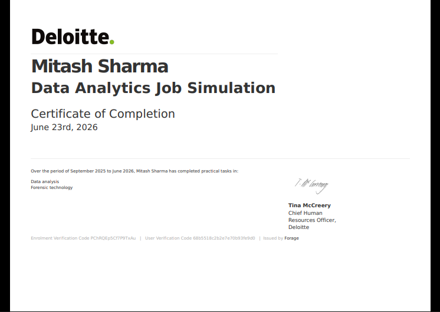
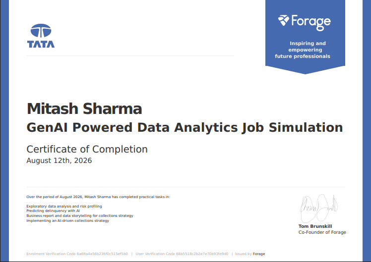
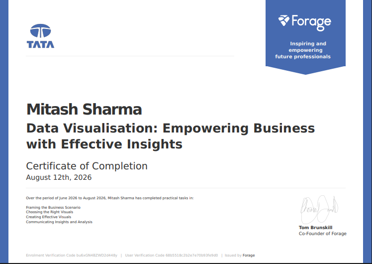
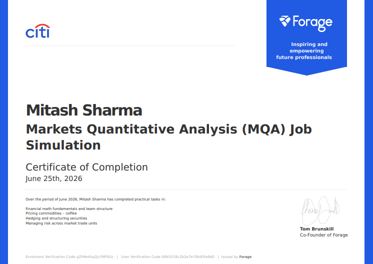
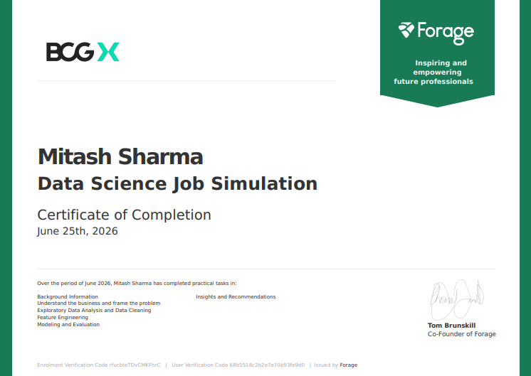
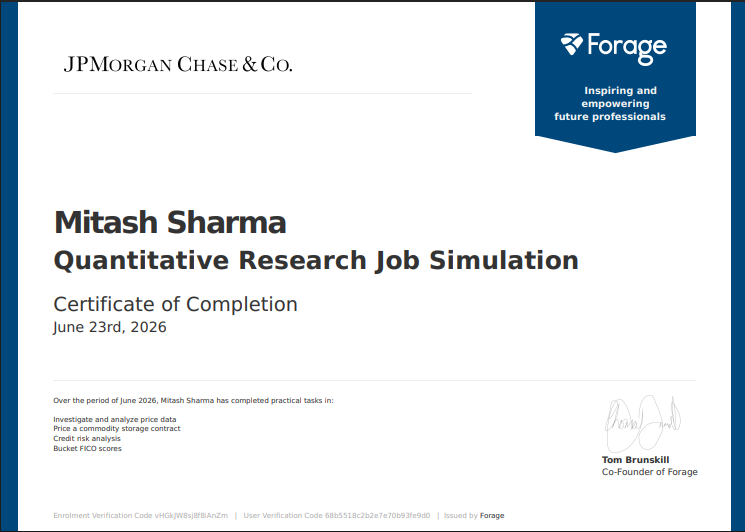
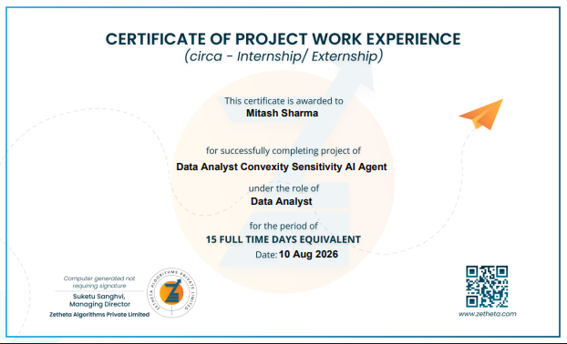

Certifications & Virtual Internships
A portfolio of verified industry credentials, virtual job simulations, and project work experience.
Data Analytics Job Simulation

Practical tasks in corporate data analysis, forensic technology investigation, and translating complex data metrics into executive insights.
GenAI Powered Data Analytics Job Simulation

Exploratory data analysis, risk profiling, AI-driven delinquency prediction, and business data storytelling for collections strategy.
Data Visualisation: Empowering Business with Insights

Framing business scenarios, selecting appropriate visual representations, creating effective dashboards, and communicating actionable insights.
Markets Quantitative Analysis (MQA) Job Simulation

Financial math fundamentals, commodity pricing (coffee), hedging and structuring securities, and managing market unit risk.
Data Science Job Simulation

Framing business problems, data cleaning, exploratory data analysis, feature engineering, machine learning modeling, and strategic recommendations.
Quantitative Research Job Simulation

Investigating price data, pricing commodity storage contracts, executing credit risk analysis, and bucketing FICO scores.
Data Analyst Convexity Sensitivity AI Agent

Project Work Experience (Internship/Externship) as a Data Analyst focusing on convexity sensitivity analysis and AI agent development.